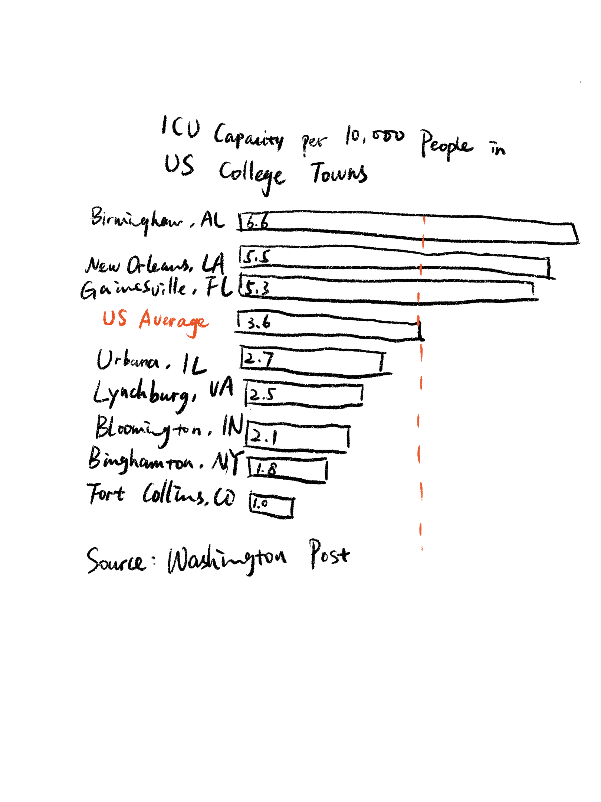

I'm an interdisciplinary UX designer and will graduate in August. I study under the Human-Computer Interaction Institute here. I am passionate about technology and entertainment and specialized in web design & development. Trying out new things is a common practice for me and I am always ready for a neew challenge. See one fun fact about me in the footer :)
Obviously, how to tell a story using data. But building on that, I'm also interested in how to apply my data visualization skills in my design as well as how to tell a story using not only data but also other evidence. At the same time, I want to get in touch with excellent people who share similar interests with me and enjoy this wonderful class together!
Here's where all of my data visualization will go.
The following 3 visualizations use the same set of data that comes from OECD. The customized color palatte was inspired by Adobe Color. The bar graph shows the GDP of different countries in 2015 while the gird of lines graph compares the growing trend of Debt-to-GDP ratio of different countries across years. The third data visualization uses box plots to compare the average financial situation of different countries. Although they use the same set of data, different filters and grouping of the data leads to different information. I selected box plots because it can indicate the normalized Debt-to-GDP ratio of individual country. I used a highlight of 100% for ratio to separate countries with positive and negative financial situations. The growing trend across time is not the key information here so it's unnecessary to rank data based on time but instead to make sure the data range is the same.
I took a data visualization from an Medium article. I selected it because it's a public open source and the data is simple to replicate. The article itself is an interesting topic but the visualization is a typical correct but distractive content in that article.
Through the critic method - Stephen Few's Data Visualization Effectiveness Profile, I got a few insights of what worked and what didn't. The bar chart is clear to convey the simple information. And the title is well-written. The information itself is not difficult to understand and the source indicates the authenticity of the data. But the all capitalized text is very distractive and difficult to read and there are no difference between the data, which makes the key information difficult to find. I created a sketch by hand first where I changed the text to title style and add a highlight of the US average data by changing its color.
I tested my sketch with 2 users. The first user is not sure about changing the color of the label to highlight certain data. Both users identified the target audience easily and agree with the effectiveness of a bar chart. The second user said I should stick with this format but with explorations of color palette. So I moved on to my final solution. I stick with the bar chart since the format is appreciated. The data are grouped in terms of the comparison to the average because I want to clearly distinguish between the college towns have poor/adequate ICU capacity. I also changed the text style so that it's reader-friendly. I moved the labels to the left so that users' eyes don't have to jump between left and right to match the town name and the exact capacity.
Here's the final solution that I built using Flourish.